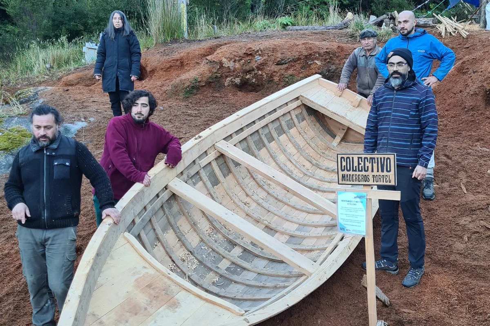
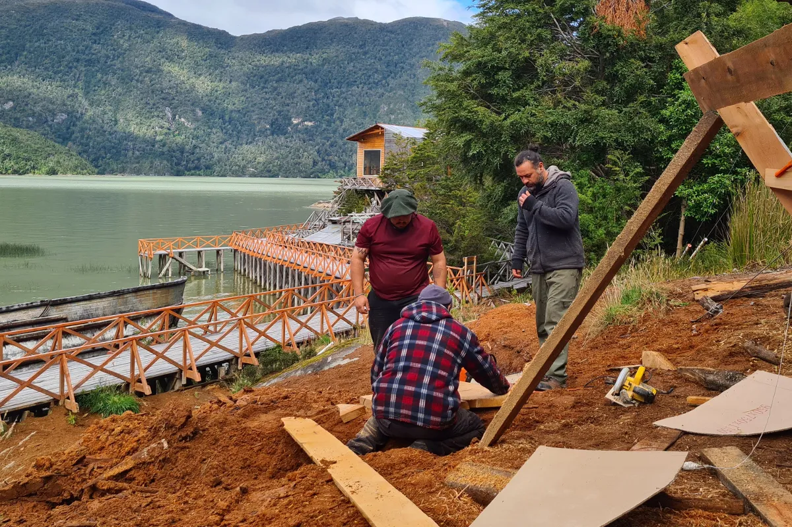
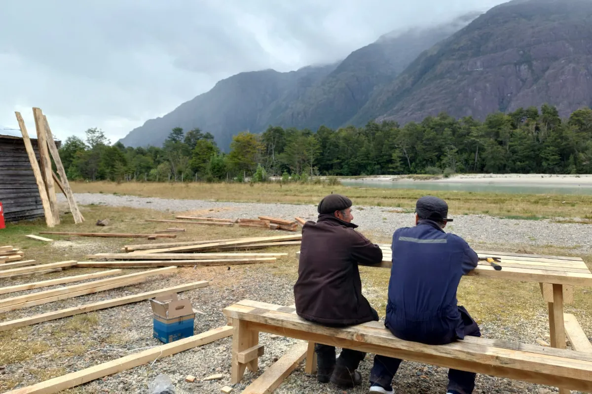

Nosotros
Oficios, territorio y nuevas formas de crear

El Colectivo de Madereros de Tortel nace de una historia profundamente vinculada a la madera. En Tortel, este material ha sido parte de la vida cotidiana y del desarrollo de la comuna: en la construcción de viviendas, embarcaciones y pasarelas, en la tejuelería y en las distintas formas de trabajo artesanal que han permitido habitar este territorio.
Desde esta tradición, reunimos conocimientos y experiencias vinculadas a los oficios de la madera y los ponemos en diálogo con la creación contemporánea, la educación, el patrimonio y otras disciplinas. Nos interesa que los saberes asociados a la madera permanezcan vivos, se transmitan y también puedan transformarse a partir de nuevas preguntas, técnicas y formas de creación.

Nuestro trabajo se desarrolla principalmente en Tortel y en otros territorios de la Región de Aysén. Realizamos procesos formativos, proyectos de investigación y creación, actividades culturales y comunitarias, y acciones de puesta en valor del patrimonio.
Entendemos los oficios no solo como un conjunto de técnicas, sino como formas de conocimiento. Cada herramienta, material y gesto contiene experiencias acumuladas y maneras particulares de relacionarse con el entorno. Por eso, nuestro trabajo busca generar espacios donde estos conocimientos puedan compartirse entre generaciones y comunidades, al mismo tiempo que se abren a otras miradas provenientes de las artes, el diseño, la investigación, la educación y la cultura.

Creemos en una práctica cultural situada, colaborativa y vinculada a las necesidades del territorio.
Desarrollamos proyectos con comunidades, organizaciones e instituciones, generando redes de colaboración en torno al patrimonio, las artes y los oficios. Desde Tortel, buscamos contribuir al reconocimiento de la identidad maderera de la comuna y ampliar las posibilidades que ofrece la madera como materia de creación, aprendizaje y transformación social.